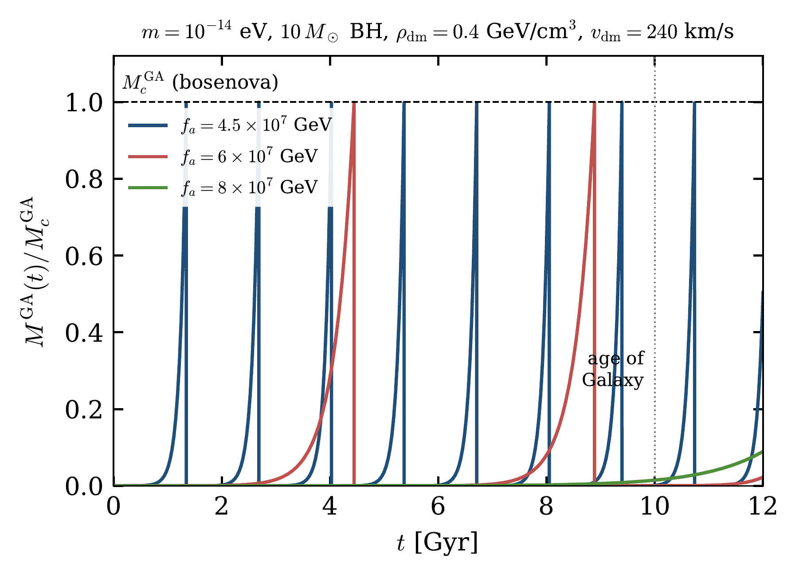
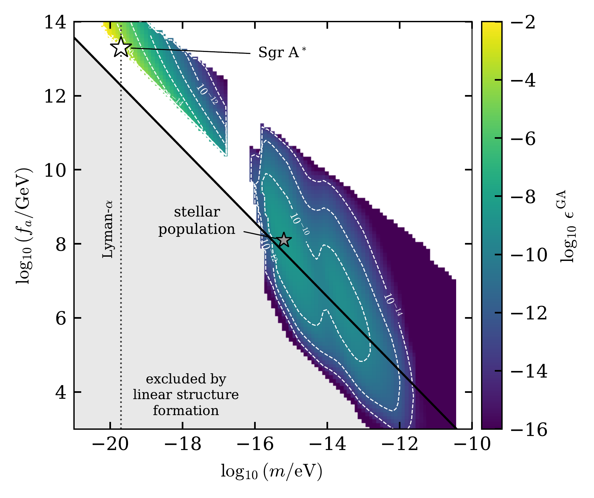
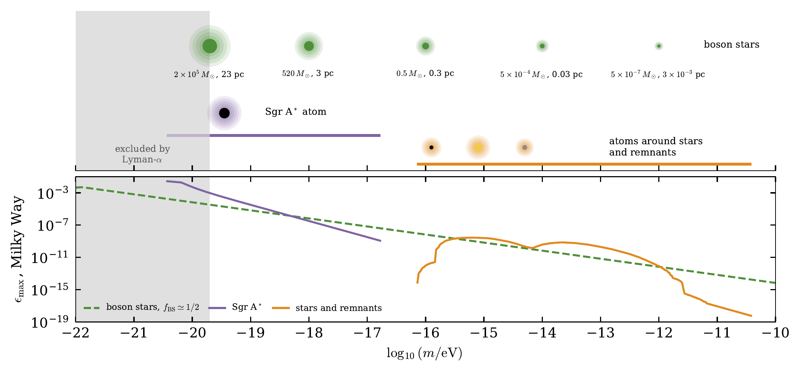

Paper overview
If dark matter is made of ultralight bosons with attractive self-interactions, it can be captured around stars and compact objects into gravitational atoms, or condense into self-gravitating boson stars. When these configurations grow beyond a critical mass they collapse in a bosenova and radiate part of their mass as relativistic bosons that escape the galaxy. This work asks whether repeated bosenovae could act as a dark-matter pump and empty a galactic halo over cosmic time. The answer is no, by a wide margin.
Ultralight bosons, with masses $10^{-22}\,{\rm eV}\lesssim m\lesssim 1\,{\rm eV}$, are among the most studied alternatives to weakly interacting massive particles. Any axion-like potential implies an attractive quartic self-interaction,
where $f_a$ is the decay constant. The coupling is tiny, but the enormous occupation numbers of galactic dark matter compensate for it and can drive the formation of bound configurations by accretion alone.
A galaxy contains $\sim10^{11}$ stars and compact remnants embedded in its dark-matter halo. If each of them hosts an atom that repeatedly turns cold dark matter into radiation, could these processes deplete a significant fraction of the halo? A positive answer would convert dark matter into radiation without any coupling to the Standard Model, and could even produce dark-matter-deficient galaxies such as NGC 1052-DF2.
Near a star or compact object of mass $M$, the bosons form hydrogen-like bound states, a gravitational atom, with a Bohr radius and a focusing parameter
Self-interactions populate these states from the ambient dark-matter waves. When the atom is smaller than their de Broglie wavelength ($\xi_{\rm foc}>1$, a dense atom), Bose enhancement makes its mass grow exponentially,
until the attractive self-interaction overcomes the gradient pressure at the critical mass
The atom then collapses in a bosenova, radiates a fraction of its mass and starts growing again, so the cycle can in principle repeat over the age of the galaxy.

Gravity and self-interactions also act on the halo itself, which can nucleate boson stars. Embedded in the halo, a boson star keeps growing by Bose-enhanced scattering of the surrounding dark matter, but with an attractive coupling it is stable only up to a maximum mass,
A heavier star collapses and radiates a fraction $\delta^{\rm BS} \simeq0.3$ of its mass, after which the remnant grows again. Boson stars are therefore a second kind of pump, fed directly by the halo rather than by the stars of the galaxy.
An atom can only radiate what it has captured. Splitting the evolution at the first bosenova, at time $t_c^{\rm GA}$, the mass that a single object ejects in a time $T$ is bounded by
where the pump term is the throughput of an atom at its critical mass, capped by the geometric flux $F_{\rm geo}$ of dark matter through its gravitationally focused cross section. The bound is applied only where the formation mechanism is valid: point-like source, non-relativistic bound state, perturbative background, dense regime and enough time. Even in its most favourable corner, a single object ejects less than $3\times10^{-8}\,M_\odot$ over the age of the Galaxy.
The total ejection follows from summing this bound over a realistic model of the Milky Way: an NFW dark-matter halo, thin and thick discs and a bulge with their formation histories, a standard initial mass function, and stellar evolution into white dwarfs, neutron stars and black holes, including natal kicks. Over the whole $(m,f_a)$ plane, the stars of the Galaxy deplete at most
about $3\times10^3\,M_\odot$ of dark matter over the age of the Galaxy. Almost all of it comes from stellar-mass black holes in the inner few hundred parsecs, where the dark matter is densest; the solar neighbourhood contributes only $\sim10^{-5}$ of the total.

The central black hole, Sgr A$^*$, does better in a separate window of boson masses. Near the Lyman-$\alpha$ bound its atom could radiate up to $\epsilon^{\rm GA}\sim10^{-3}$ of the halo, but only for $m\simeq2\times10^{-20}\,{\rm eV}$, a mass disfavoured by the stellar kinematics of ultrafaint dwarf galaxies, and through a geometric bound that applies where the perturbative treatment has broken down. Above $3\times10^{-19}\,{\rm eV}$ this term is at most $3\times10^{-6}$.
Repeating the calculation for dwarf spheroidals, ultra-diffuse and compact galaxies and giant ellipticals gives a remarkably stable answer: every template ejects about $10^3\,M_\odot$. The pump is locally significant only in a dense nucleus, where the black holes of a nuclear star cluster can process $\sim10\%$ of the dark matter within the central parsecs. A DF2-like galaxy would lose $\sim10^3\,M_\odot$, more than four orders of magnitude short of the $\sim5\times10^{10}\, M_\odot$ halo it would have to have lost.
If a fraction $f_{\rm BS}$ of the dark matter is in boson stars feeding on the rest of the halo, the radiated fraction is largest for $f_{\rm BS}\simeq1/2$ and boson masses close to the Lyman-$\alpha$ bound. Even then, the pump would radiate at most $3\times10^{-5}$ of the Milky-Way halo, $0.1\%$ of a DF2-like galaxy and $6\%$ of a dwarf spheroidal. These are upper estimates, since the self-interaction growth rate is overestimated for the large, dilute stars that dominate.

Bosenovae cannot empty galaxies of dark matter, but they may still be observable if the boson couples, even weakly, to the Standard Model. Each bosenova emits a burst of relativistic bosons, and for derivative couplings to spins such bursts are a promising target for magnetometer networks. The flux from the Galaxy as a whole is negligible at the Earth, but for $1.7\times10^{-14}\,{\rm eV}<m<1.9\times10^{-13}\, {\rm eV}$ the Sun hosts its own atom, whose explosions could be detectable.
The decay constants at which every channel peaks lie many orders of magnitude below those for which vacuum misalignment alone produces the observed abundance. On the misalignment line itself, where all the rates are smaller still, every channel is even more negligible.
The paper bounds, for every channel, how much dark matter bosenovae can convert into escaping radiation:
Neither the atoms of stars and compact remnants nor boson stars feeding on the halo come close to depleting a galaxy. Only the atoms of supermassive black holes reach larger fractions, and only for boson masses that are already disfavoured and in a regime beyond the validity of the perturbative treatment. Bosenovae therefore cannot explain dark-matter-deficient galaxies, although the bursts of the Sun's own atom could still offer an observational handle.